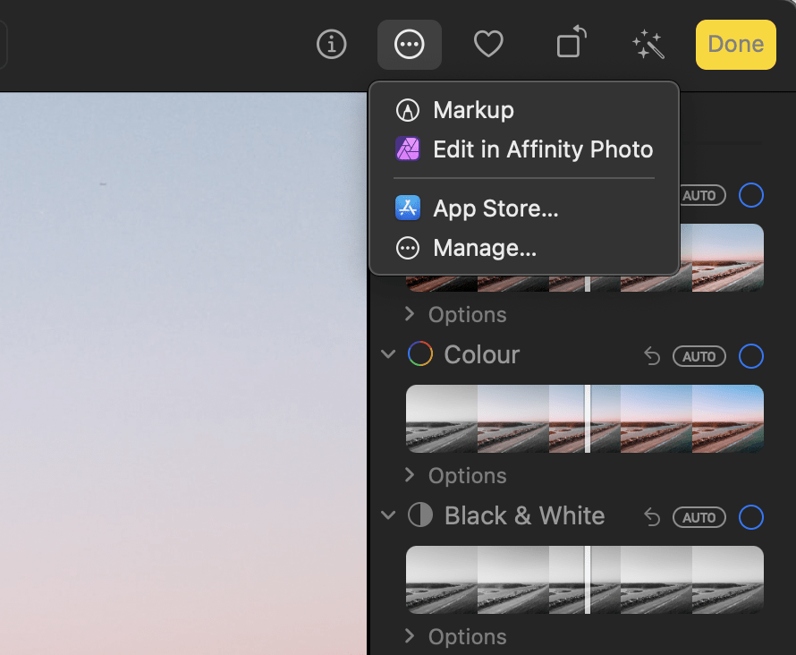

Affinity Photo 2's features can be accessed from Apple Photos to edit library items.
The Affinity Liquify, Miniature, Monochrome, Haze Removal, Develop and Retouch extensions can be applied to an image without leaving Apple Photos.
Alternatively, you can send an image to Affinity Photo 2 to use the app’s full toolset, and then save the result back to your Apple Photos library.

Complex edits involving advanced features, such as layers, masks and live filters, for which you require multiple editing sessions are best conducted by exporting to an external file, loading that file into Affinity Photo 2, saving your work in the.afphoto format.
When editing is complete, export the final version for publication or (optionally) for importing into your Apple Photos library.